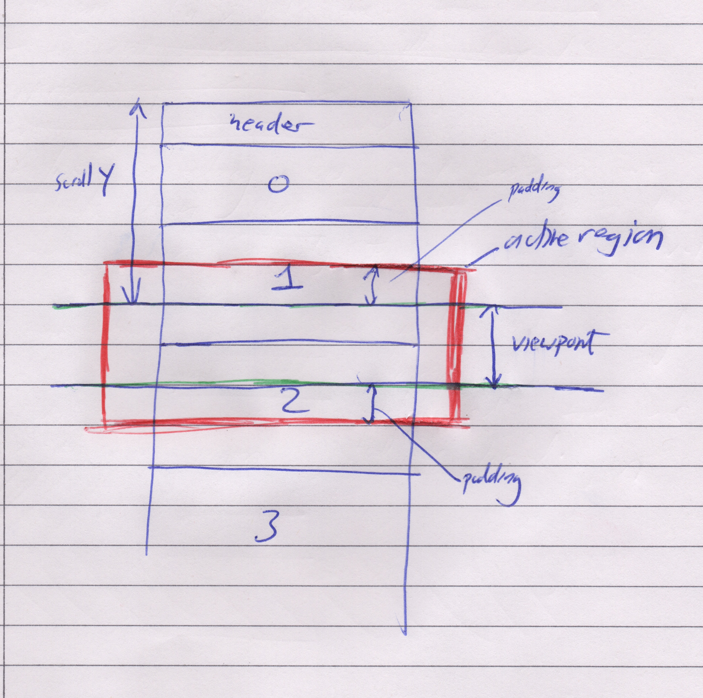
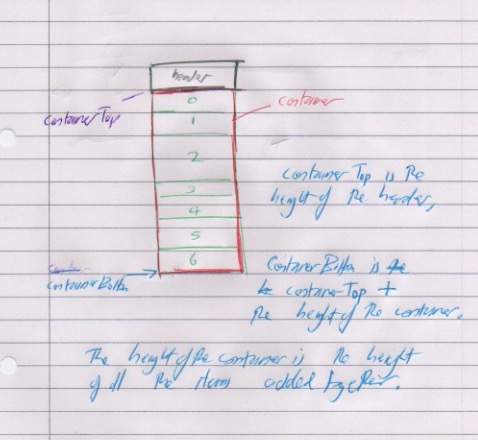

Presenting paged content in a web browser has been a challenge since the advent of the web and various approaches have been developed for meeting it.The traditional technique is 'pagination. Content is split up into separate web pages and controls are provided for navigating through these. Another approach is called 'infinite scroll'. As the user scrolls down the page content is added to the bottom on the fly so that the user never reaches the end of the page until all the content has been loaded. Both these techniques have their drawbacks in terms of user experience and the Baymard Institute instead recommends a third technique which we will call 'load more'.
Having described the behavioural requirements of the application, I will now discuss the implementation details.We have drawn from various resources for inspiration including Paul Lewis's implemntation of infinite scroll. The techniques that we have used are lazy loading, DOM node recycling, and scroll anchoring. We will discuss these in turn.
Normally, only a fraction of the page content will be viewed by the user at any one time. Some content may never be viewed at all. For performance reasons it is therefore a good idea to only load in the content that the user wants to see at the present time. As the user scrolls down the page we can load in the rest of the content. Ideally this process should be transparent to the user: That is, the page should appear to the user as if all the content is there from the very start. Since loading takes time and users can scroll fast, (possibly faster than we are able to load in data), we need to display placeholder content to show to the user that actual content is on its way. The placeholder content should give an indication of the type of content that they will eventually see as well as how much of it there is. Even when the user doesn't actually see the place holder content, the scrollbars will give an indication of its size.
On first render, a placholder is rendered into the container. This placeholder is called a 'tombstone'. It has generic content and styles since it's purpose is to take up approximately the same space as the real content would and to give the user an indication of the content to come. Once the tombstone is rendered, a call is made to the server for the actual content. When this returns we 'reify' the item by replacing the placeholder with the real content. The reified item is likely to be a different size to the placeholder. This causes a problem where if the current scroll position of the page is below the reified content, it will change, causing disruption to the user. We will discuss the solution to this problem later.
As well as loading in content on the fly, it is also beneficial to remove content from the page when the user isn't looking at it. This is because there is a performance cost to maintaining the DOM. The more nodes in the DOM, the worse the page will perform. In a long list of search results, as more nodes are added the performance will degrade. If we remove nodes that are not currently being seen by the user, we can limit the number of nodes in the DOM, even in a list that scrolls down forever!
We need to work out the area that the user is interacting with. Let us call this the 'active region'. Technically, the active region is the rectangular area which all loaded items should intersect with. The idea is that items that fall within the region should be loaded into the container, whilst items that are outside the region should not be loaded in.  The size of the active region should comprise the viewport and some padding above and below, constrained at the top and bottom by the container. The purpose of the padding is to take up the equivalent space of unloaded content so that the scroll bar will behave as the user expects. The amount of padding is somewhat arbitrary and may be an absolute value or a proportion of the viewport height. It is recommended to be a configurable value so that different values can be experimented with.
The top of the container is easy enough to discover as it is simply a matter of measuring in the DOM the distance from the top of the container to the top of the page. The bottom of the container is more difficult. Clearly, it should be height of the container added to the container top value, however the height of the container element obtained from the DOM is not necessarily the one that we need. The size of the container needs to be the same as if all the items were loaded into it, but since they aren't, we need to work out what size the container would be if they were. We can do this by associating with all items a height value. If an item has been loaded into the DOM we can measure its height and use that. If an item has not been loaded yet into the DOM then we give it the height of a tombstone element. To find the height of the container, we iterate through all the items and add all the heights together. 
Changes can occur which change the size of the content of the page such as when items are reified or when the user changes the width of the viewport. The best user experience in both cases is where the point on the page that they are looking at before the change remains in the same place afterwards. The scrollbar will change to reflect the changing content.
The technique to achieve this effect is called 'scroll anchoring'. It works by having a scroll event handler which records two properties: the current item that the user is viewing, and it's offset from the top of the viewport. After changes to the page take effect, we calculate the scroll value necessary for the new values of these properties to be equal to the saved ones.
The scroll anchor item should be the first item, going from first item to last, whose bottom edge is below the top of the viewport. We also record the amount which this bottom edge lies below the top of the viewport. This is enough information to restore the page later. The process to calculate the scroll anchor needs to run on every scroll event. in this implementation when we reify an item we measure its height and cache this value. It is important that once the image is inserted into the DOM it has its final height. Thus any images within the image must have a height set within the stylesheet.
A key goal of every web page is that it meets commonly agreed standards of accessibility. Specific behavioural requirements for this component relating to this were as follows: